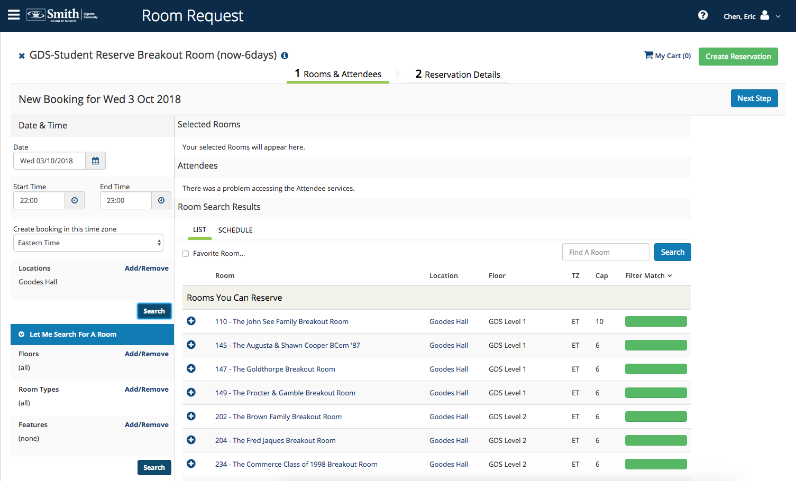
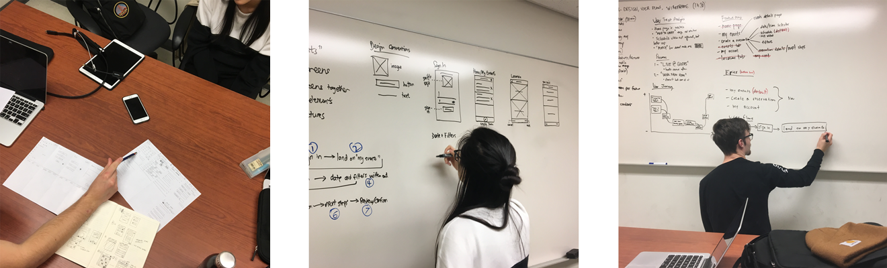
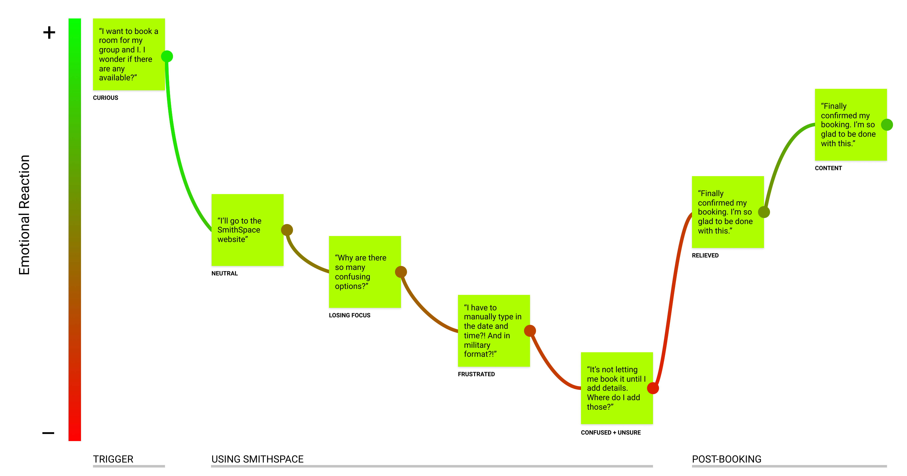
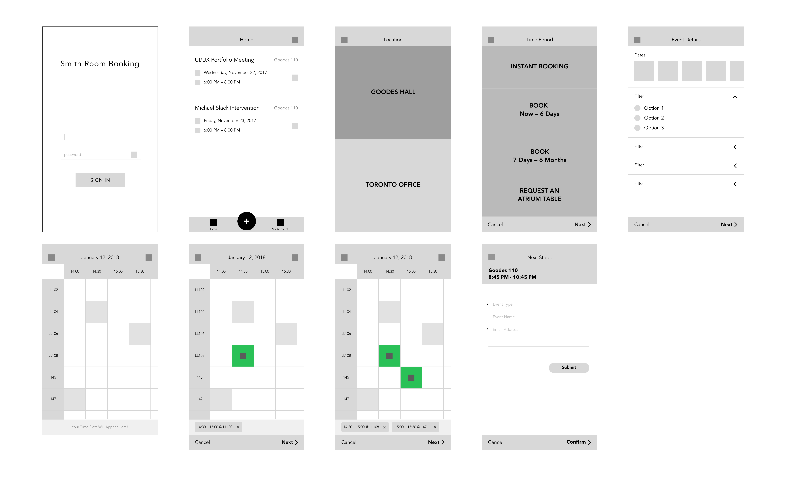
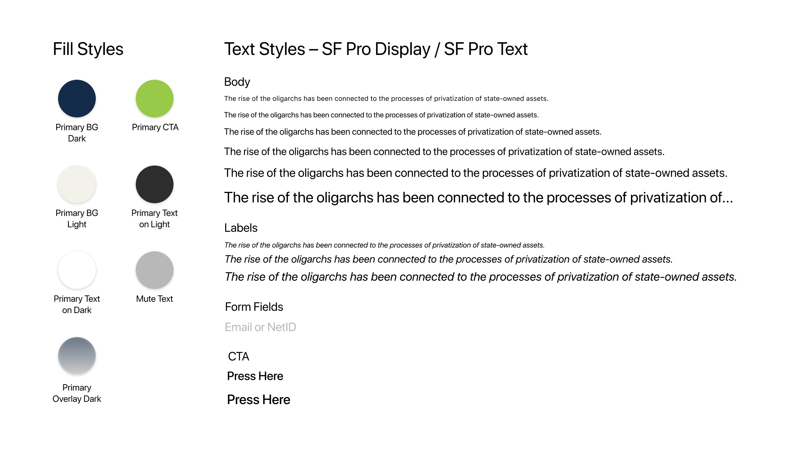
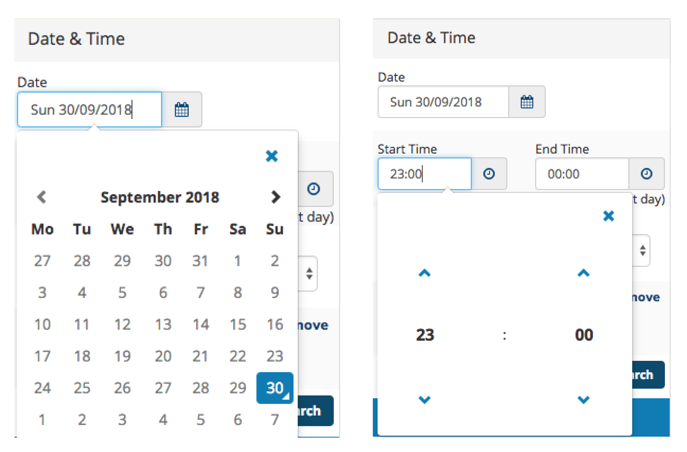
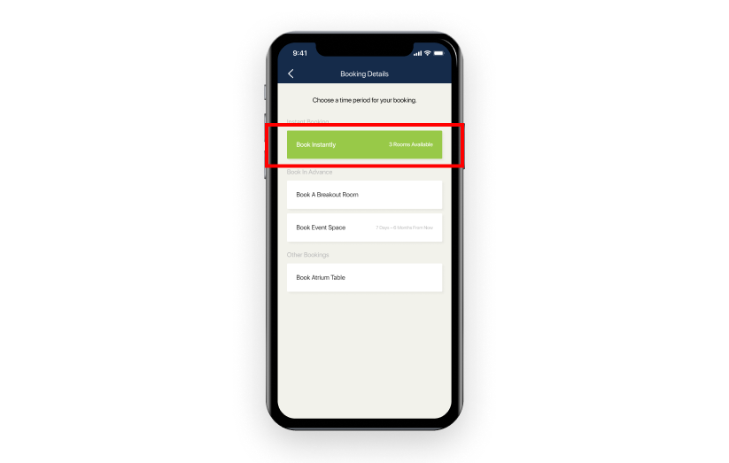

SmithSPACE Reimagined
A Case Study on the Smith School of Business Room Booking System
Figma Prototype (best viewed in full screen)
Context
As the Director of UI/UX for the Commerce Society Agency at my school, I had the opportunity to redesign the room booking system for Smith School of Business.
This was a pro-bono design project of which I led a team of three designers (including myself) to research, ideate, build, and prototype a mobile experience for SmithSPACE.
Product Description
SmithSPACE is the web portal that faculty and students use to book breakout rooms and event space in the school.
For the purpose of this project and prototype I chose to focus specifically on the flow for students to book breakout rooms. More research will need to be conducted for future iterations of this project to include flows for faculty and event space.
Current SmithSpace Web Portal
Design Process
As a manager and designer, I led my team through various ideation exercises modelled after Google’s Design Sprint framework. Since we are students with conflicting schedules, the Sprint had to be broken up into multiple weeks.
User Interviews — Week 1
We had sessions with 10 students total–7 of them were business students familiar with using the product; 3 of them were from other faculties and had not seen it before.
The sessions consisted of a brief questionnaire followed by a basic task: booking a room.
Below is a list of some of the key takeaways from our research.
- All users found the steps to be disorienting. Many did not know there were hidden form fields that needed to be filled out until clicking through all the different navigations
- Students who were familiar with the product knew where to click but only because their behaviour was learned over many months and years of booking rooms.
- Students who were not familiar with the product said they were overwhelmed by the number of options they were shown on one screen, and most of those features did not get used.
Conceptual Design — Week 2
Next week, we used our synthesized research to guide the Sprint.
Whiteboarding user flows and wireframes
The key deliverables for this session were a user journey, a feature map, and a basic user flow. Below is the user journey for the current web portal.
User journey for current SmithSpace web portal
The journey map was an effective tool for us to figure out which areas needed most improvement. Based on what we drew, we wanted to focus most on making date-picking and entering event details as straightforward as possible for users to ensure they do not get frustrated.
Design Logic
It was clear to us that the web platform imposed a cognitive overload on the user, forcing them to make all their decisions simultaneously. With limited screen real estate we decided to utilize a stepped process, which we thought would work better for a complicated task. It breaks up the flow into smaller tasks, allowing the user to focus on one thing at a time.
Wireframes — Week 3
I guided my team through a drawing exercise based on Crazy 8’s from the Google Design Sprint. The team had 2 minutes to come up with 2 different wireframe concepts for each step of the user flow.
After reviewing everyone’s concepts, we synthesized and drew some initial wires on the whiteboard for us to recreate in Figma on a later date.

Whiteboard Wireframes
Wireframes created in Figma
High Fidelity Screens and Prototyping — Weeks 4–12
The next few weeks were all about getting the design system set up and teaching my team how to use Figma.
Style Guide
Week by week, we started to piece together the screens and prototyped the new mobile app on iPhone X.
Date Picker
As per the journey map, it was imperative for us to make the date-picking process a pleasant experience for the user. Currently, the web portal makes users pick the date from a small calendar widget. The “time” fields are also mandatory, forcing people to use the up and down arrows to choose from a 24 Hour Clock.
SmithSPACE Web Date Picker
In our redesign, we used a large, scrollable calendar widget. We also opted to make the “time” field optional, because our research found that many of our users just wanted to see the available rooms regardless of the time of day. This saved a few clicks and lets the user dive into the room-picking page right away.
Date Picker flow with optional time field
Reflection
This project resulted in a lot of first-time experiences for me.
- First time teaching a group in a design management position
- First time working through an entire design thinking framework
- First time conducting a user study outside of work
Looking back, there were several things I wish I would have asked or done differently in the research phase:
- Conduct research with more subjects — We only had 10 in-person interviews, but we could have generated a lot more responses if we had sent out an online survey for people to easily complete.
- Would people actually download a new app? — Many people will be reluctant to download a new app on their phone even if they said they would; many are content with the web platform due to their learned behaviours.
- Less bias in our research questions — As the design leader my job was to teach the juniors about iOS app design. Naturally, some of our research questions were bias towards mobile because I didn’t want the results to go against that and change the project scope entirely.
In the next iteration of the project, we will need to think about how to design other flows in the app and keep them consistent with what we have already.
Instant Booking Button
Instant Booking
In our research we found that some students simply wanted a quiet place to study immediately, whether it be after class or if they were in a particular building already, so we wanted to eventually create a feature which lists all the rooms that are currently available to use.
Faculty + Event Space
We also needed to conduct proper research to learn how to design for faculty, and how to improve the booking process for event spaces.
Please refer to the widget at the top of this article to play around with the Figma prototype.
Thanks for reading!